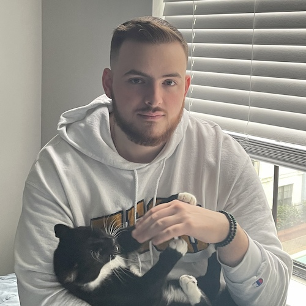

Quinn Signer
ASL learning mobile game made under the Sign Game Labs studio.

Hello, my name is Kellen Madigan. I am a VideoGame Designer, Software Developer and AI Engineer. Please have a look at my CS journey thus far!
ASL learning mobile game made under the Sign Game Labs studio.
ASL learning mobile game made under the Sign Game Labs studio.
ASL learning mobile game made under the Sign Game Labs studio.
GaTech project from CS4455, where a videogame was made using Unity3D. My group worked to create a souls-like with an isometric perspective.
GaTech project from CS2200.
GaTech project from CS3600, where models were trained on public datasets. My group worked to better the training in multiple ways and test on a variety of factors.
GaTech project from CS4644, where models were trained on public datasets to aid in identifying bleached coral for the purposes of environment preservation. My group worked to create a final paper summarizing our results and their potential impact.